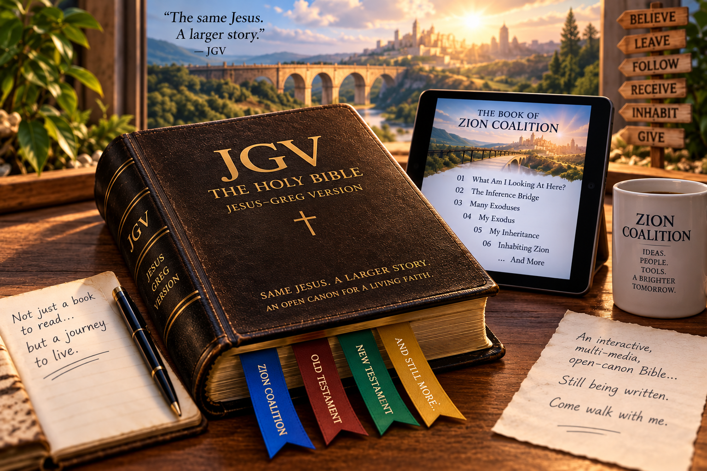
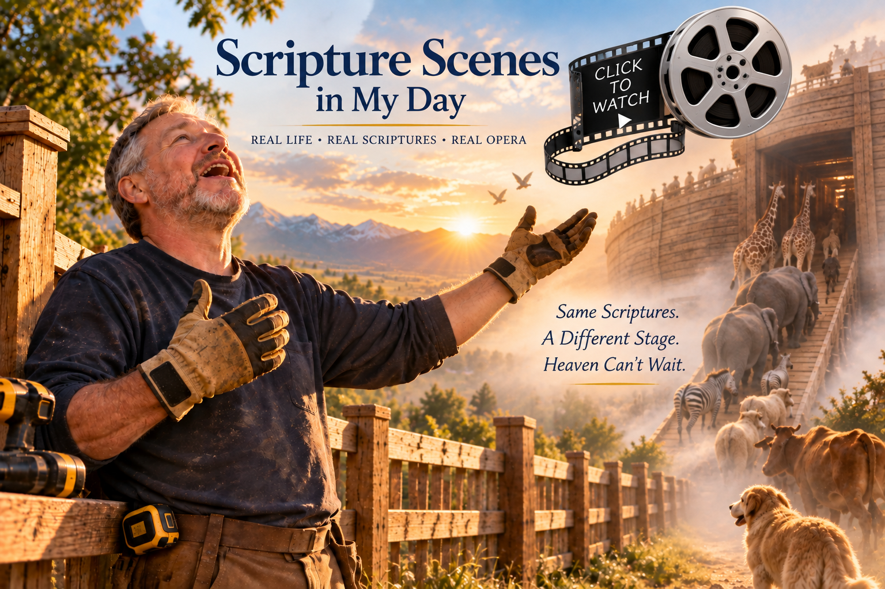

A Book within the Jesus-Greg Version (JGV) of the Bible
THE BOOK OF ZION COALITION
Imagine opening a Bible and discovering a book you have never seen before.
But this is not quite a Bible book in the conventional sense.
It is an interactive, multimedia, open-canon Bible book—part scripture, part field guide, part rehearsal book, part journal, part website, part performance art.
It contains words, images, music, hyperlinks, rooms, objects, experiments, revised songs, lived experiences, and things I don't yet know how to categorize.
That matters.
Most of the Bible reaches us after centuries of transmission. The pages feel settled. The ink is dry. We encounter the finished artifact and rarely get to watch revelation, interpretation, mistakes, revisions, arguments, experiments, and lived experience accumulating in real time.
Pages can change. Ideas can mature. Chapters can move. Conclusions can be reconsidered. New material can appear tomorrow.
This is not presented as a replacement for anyone else's Bible, nor as something anyone else is required to accept as scripture.
It is my Bible—the Jesus-Greg Version—and this particular book records an experiment:
That makes this book more than something to read.
It is something I am attempting to live.
A guidebook tells me where I might go.
A rehearsal book helps me practice what I am going to do.
An open canon allows me to record what I am learning.
And performance art makes the ideas physical: I walk through them, build them, sing them, revise them, inhabit them, and sometimes discover their meaning only after I have already begun doing them.
So don't approach the pages that follow as a finished theological system.
But do understand that I approach them as a real one, being developed by me and Jesus.
You are watching the Bible being written while the person writing it is also trying to live inside it.
Introduction
What Am I Looking At Here?
These pages document an unfolding personal thought experiment about following Jesus into a larger understanding of Zion.
The starting idea is the Inference Bridge: rather than suddenly abandoning old beliefs, I am asking whether ideas I already believe might logically lead somewhere larger. Each “plank” can be examined, questioned, tested, accepted, revised, or rejected.
That journey begins to resemble Exodus. Sometimes following Jesus means leaving a familiar way of seeing the world—not necessarily because it was bad, but because it may have prepared me for the next stage.
And this happens at many scales: an entire lifetime can be an Exodus, but so can moving from one room, activity, understanding, or moment to another.
Then comes a surprising shift: perhaps Zion is not primarily something I must build from scratch. Much of what I need may already have been prepared through countless other people—music, technology, scripture, ideas, relationships, tools, and ordinary things.
My task may partly be to receive an inheritance.
Finally, receiving isn't enough.
I have to inhabit what I receive—actually live differently because of it.
And eventually, what I receive and inhabit becomes something I can give.
So the movement is roughly:
That developing journey is what you are looking at.
And you are looking at it in an actual Bible (JGV).
Amen.
Verily.
Behold, the chapters that follow are not merely essays explaining that movement.
Continue through The Book of Zion Coalition
Five Movements
These pages form the next layer of the Book of Zion Coalition.
Bonus Section
What Happens When Scripture Becomes a Stage?
There is another experiment beginning inside My Jesus-Greg WORLD.
Instead of only reading scripture, I am beginning to ask what happens when I imaginatively enter, reenact, and perform scripture scenes inside the ordinary scenes of my actual life.
A handyman job can become a stage. My work gloves can become props. A fence I am repairing can begin to merge in my imagination with Noah building the ark.
And this may eventually become larger than my own experiment. Through Heaven Can't Wait, I hope to explore what happens when people take the scriptures we are studying together and find their own ways to enact them through music, theater, work, movement, film, ordinary life, and whatever gifts they bring.
Click the picture below to enter this developing experiment.
